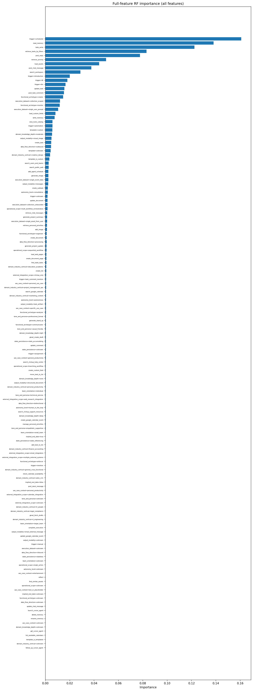
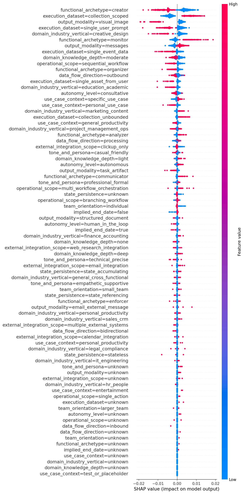
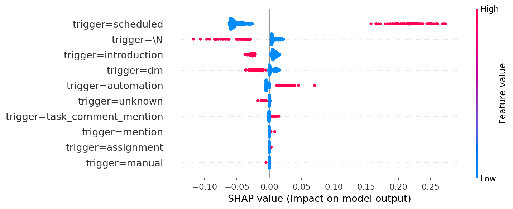
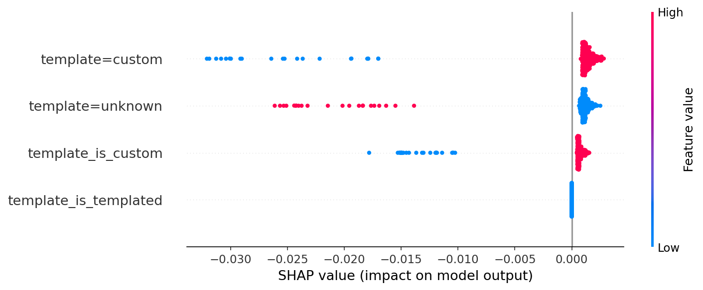
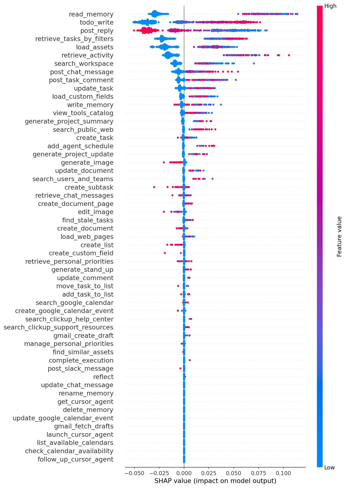
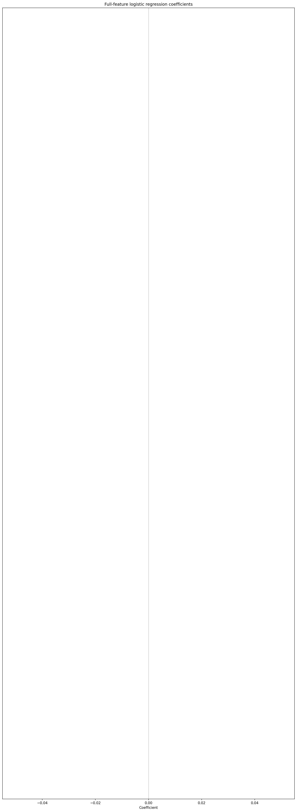
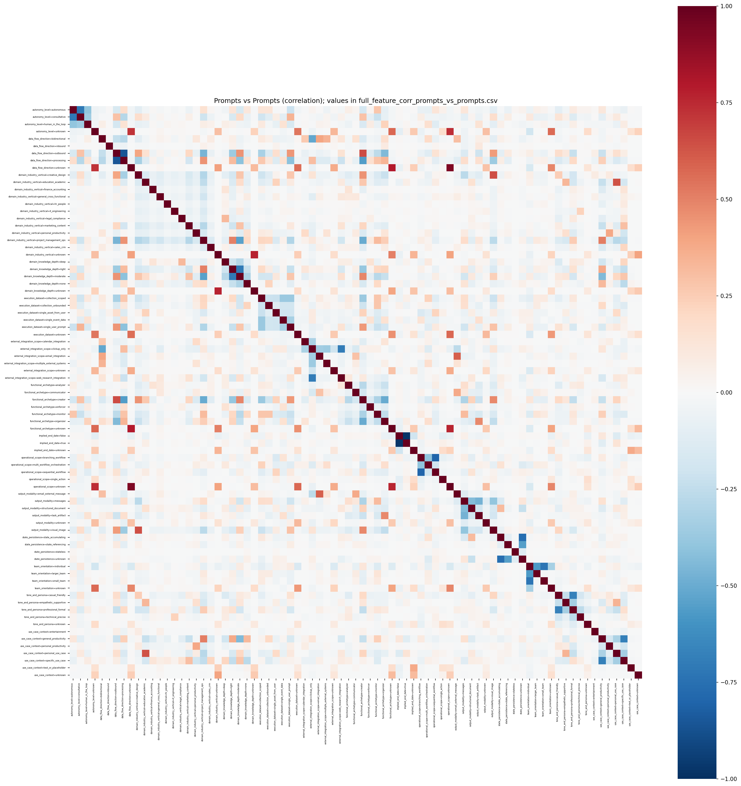
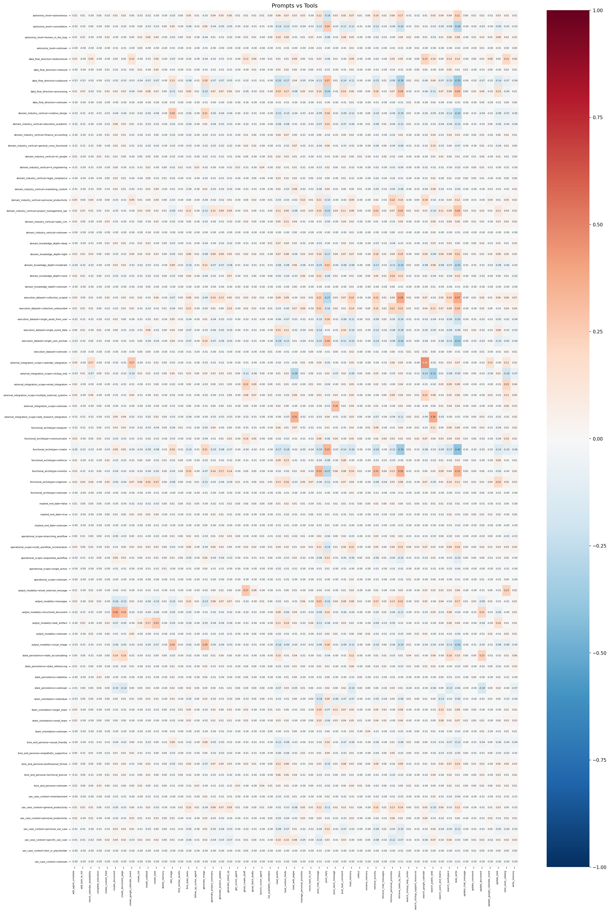
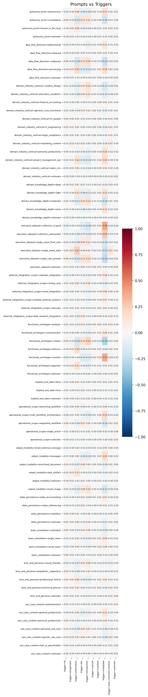
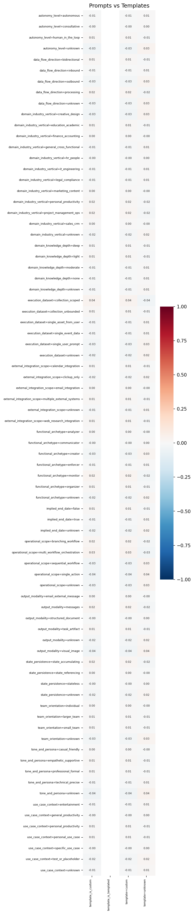

Last updated: 2026-03-11
Scope: Single readout with all features (prompt classifications, triggers, templates, tools) in one model. Data: classified cohort only. Success/failure/dormant as in main readout.
To copy into Word or Google Docs: open this file in a browser (from project folder so images load), Select All and Paste.
| trigger_source | dormant | failure | success | success_rate |
|---|---|---|---|---|
| \N | 13,051 | 1,154 | 1,654 | 0.104 |
| assignment | 586 | 86 | 559 | 0.454 |
| automation | 2,191 | 969 | 4,741 | 0.600 |
| dm | 26,109 | 1,321 | 7,493 | 0.215 |
| introduction | 23,326 | 519 | 219 | 0.009 |
| manual | 28 | 33 | 36 | 0.371 |
| mention | 241 | 44 | 229 | 0.446 |
| scheduled | 646 | 1,767 | 20,746 | 0.896 |
| task_comment_mention | 913 | 150 | 1,035 | 0.493 |
| unknown | 3,449 | 568 | 0 | 0.000 |
Commentary: Scheduled trigger has the highest success rate (89.6%); introduction and unknown the lowest. Trigger type is strongly associated with outcome.
| TEMPLATE_TYPE | dormant | failure | success | success_rate |
|---|---|---|---|---|
| custom | 67,091 | 6,043 | 36,712 | 0.334 |
| unknown | 3,449 | 568 | 0 | 0.000 |
Commentary: Almost all success agents use custom template; unknown template is entirely non-success.
Full table: analysis/output/full_feature_tool_by_segment.csv. Success agents show higher mean usage for task/retrieval tools; lower generate_image.
Per-dimension tables in analysis/output/classification_dim_<dim>.csv for 14 dimensions. See prompts_classification_readout for detail.
| success_segment | count | success_rate |
|---|---|---|
| dormant | 70,540 | 0.322 |
| success | 36,712 | 0.322 |
| failure | 6,611 | 0.322 |
Classified cohort: 113,863 agents. Overall success rate 32.2%.
Full table: analysis/output/full_feature_rf_importance.csv. Top features: trigger=scheduled, read_memory, todo_write, retrieve_tasks_by_filters, post_reply.

Commentary: Trigger and tools dominate; scheduled and task/memory/chat tools are strongest predictors of success.
Full table: analysis/output/full_feature_shap_direction.csv. Trigger and tools have largest mean absolute SHAP; direction aligns with RF.




Commentary: High scheduled and task/memory tools push toward success; high introduction and generate_image toward failure.
Full table: analysis/output/full_feature_shap_by_value.csv. One-hot: value 0 vs 1; tools: quartiles. Value=1 for scheduled/collection_scoped pushes success; creator/introduction push failure.
Full table: analysis/output/full_feature_logistic_coefficients.csv. Strongest positive: trigger=scheduled (+0.87), template=custom (+0.41), todo_write (+0.32). Strongest negative: trigger=introduction (−0.92), post_reply (−0.67).


Full matrix: analysis/output/full_feature_corr_prompts_vs_prompts.csv. Redundancy within dimensions; helps check collinearity.

Monitor/collection_scoped correlate with task tools; creator/visual_image with generate_image, post_reply.

Scheduled aligns with collection_scoped/monitor; introduction with creator/single_user_prompt/visual_image.

Template=custom dominates; template=unknown correlates with failure-prone prompt values.
Success: Active and used at least once after 7 days. Failure: Inactive/deleted. Dormant: Active, no use post 7 days. Classified cohort only. Correlation is Pearson, agent-level.